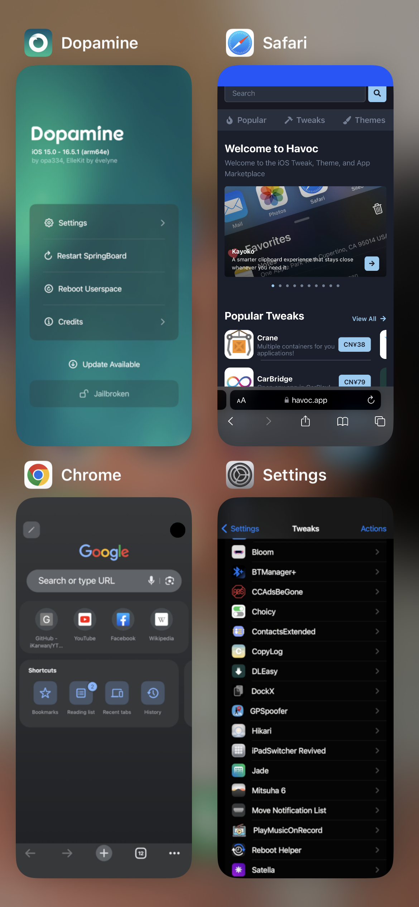
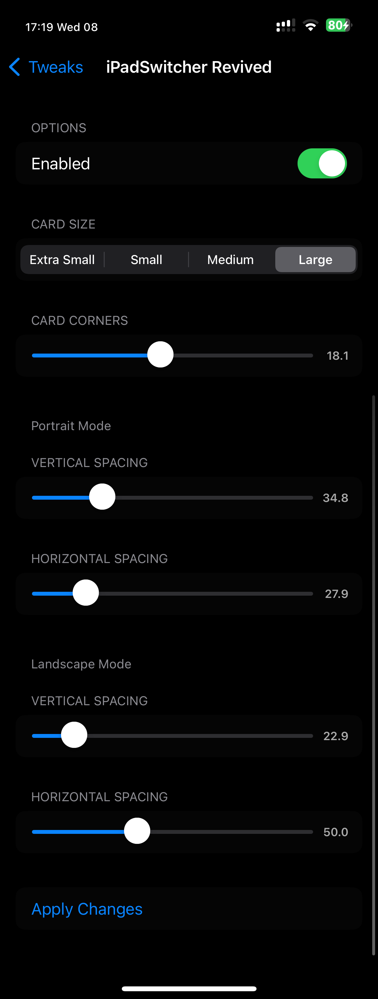

An iPad-style grid app switcher for iPhone. The original iPadSwitcher forced the iPad switcher style, which broke on iOS 16. This version instead makes SpringBoard build its own native iPad grid switcher, so it's smooth with no artifacts.


iOS 16, rootless (tested on 16.5 / Dopamine). Not iOS 15.
Based on the original iPadSwitcher by mali9510. iOS 16 rewrite by schlub51.